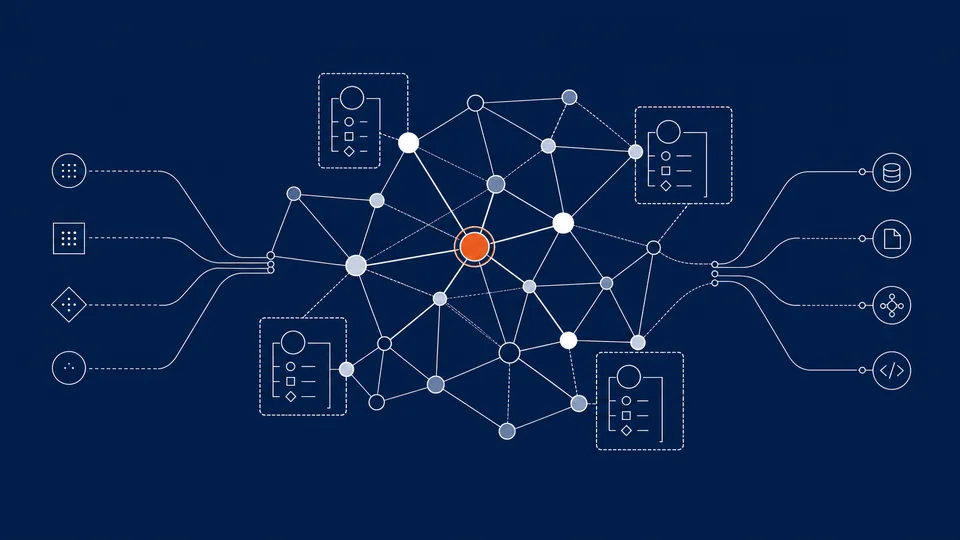
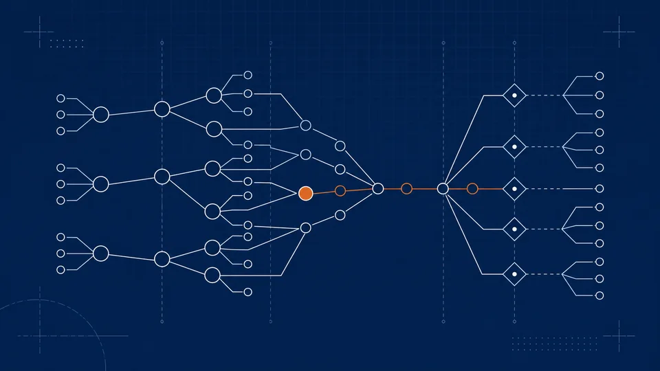

Flagship
Request the Open Engine preview
See the typed graph, schema language, storage, and export path before you model your first real domain.
See the access path →The Open Engine is a typed knowledge graph that turns scattered context into a living model your AI can reason over. Model your domain once; let Claude, Codex, and MCP-capable tools build on the same graph — and export everything, anytime.
Open by design · full-fidelity export · no rug-pull.

See the typed graph, schema language, storage, and export path before you model your first real domain.
See the access path →
Parts, suppliers, and obligations as one typed, queryable structure - not another prompt full of pasted context.
See the model →
The thesis in 12 minutes: why agents need a substrate that carries meaning, not just text.
Read the story →Request preview access and load your first nodes and edges.
→Types and traversals make the data legible to agents.
→Attach controls at runtime, where execution actually happens.
→Move to the governed platform when you need scale — full export, no rewrite.
→Coherence holds as the system grows. Meaning accrues.
Contributors, model-builders, and the curious. Request access, bring your domain, and model it out loud with us.
When integrity, multi-tenant scale, and audit matter, graduate to the commercial platform. Your graph comes with you.
See the Platform